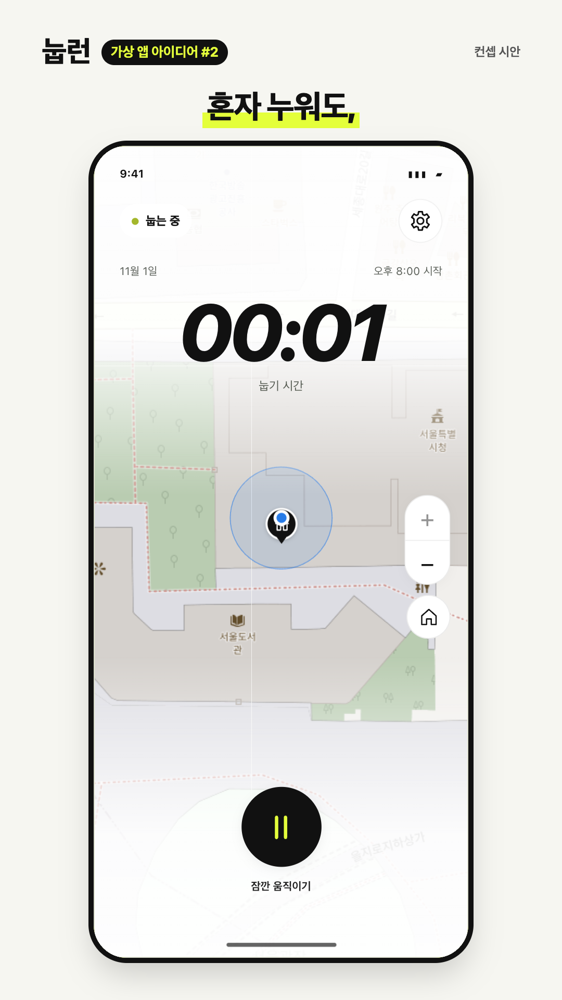
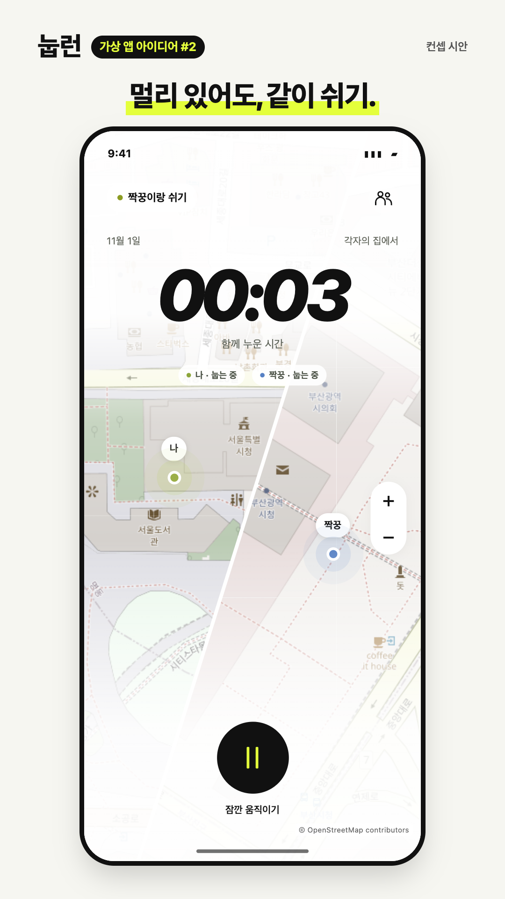
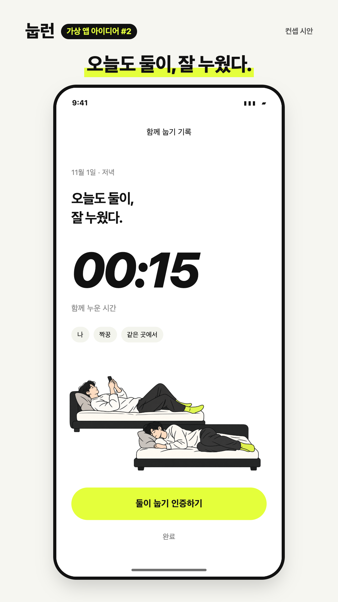

02
혼자 시간 재기
1080 × 1920 · PNG
이미지 저장 ↓영상 1개 → 서로 다른 화면 3장 → 아래 설명글
혼자 눕기 → 각자의 지도 → 동시 일시정지 → 다시 함께 → 한 지도 → 결과
이건 어때?? 그전에 하던 건 실제로 구현하기가 좀 그래서 새로운 걸 생각해봤어. #2 눕런 내가 하루에 몇 분이나 누워서 뒹굴거리는지 궁금했거든. 그냥 타이머로 재도 되는데 러닝 앱처럼 기록하면 웃기겠다 싶었어. 친구는 한강에서 5km 완주하고 나는 침대에서 42분 완주하는 거야. 짝꿍 정해놓고 같이 쉬는 모드도 생각했어. 멀리 있으면 지도를 반으로 나눠서 각자 있는 곳을 보고 같이 있으면 한 지도에 둘이 뜨는 거지. 한 명이 잠깐 멈추면 둘 다 일시정지. 끝나면 침대 사진이나 셀카를 넣어서 러닝 인증처럼 눕기 인증도 하고. 이번에는 직접 눌러볼 수 있게 프로토타입으로 만들어봤어.
검토 참고: 화면은 HTML 프로토타입이며, 실제 두 기기의 초대·위치 동기화는 아직 연결 전이에요. 지도에는 공개 테스트 장소만 사용했어요.
02 → 03 → 04 순서 · 각 이미지를 누르면 크게 볼 수 있어요.

이미지 저장 ↓
이미지 저장 ↓
이미지 저장 ↓